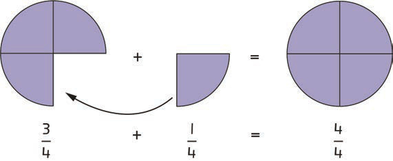

12. Sadiki has twenty bananas.He wants to distribute the bananas to his four children equally.What fraction of all the bananas will each child get?
Addition of fractions with the same denominator
To add fractions with the same denominator simply add the numerators and keep the denominator the same.
Example 1
Use drawings to answer the following question.
Steps
1.Draw a shaded three-quarters of a circle.
2.Write in numerals the three-quarters of the circle.
3.Draw and shade a quarter of the circle.
4.Write the quarter of a circle in numerals.
5.Add the shaded parts of the circle.
6.Draw a shaded whole circle to represent the sum of three-quarters and one-quarter.
7.Write the fraction of the whole circle.
The previous steps can be illustrated as follows:
